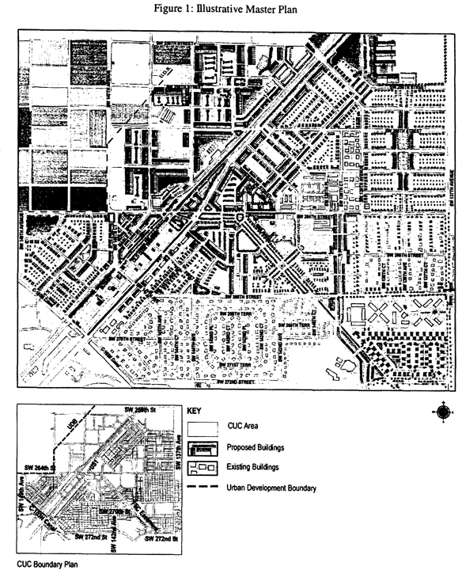
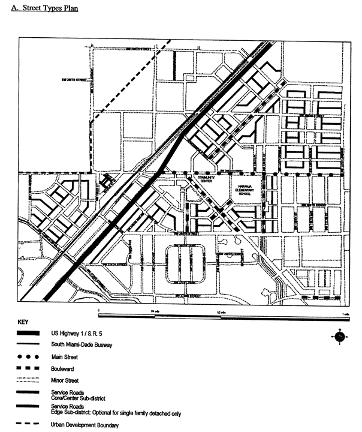

ARTICLE XXXIII(J).
Sec. 33-284.66. Purpose and applicability.
Sec. 33-284.67. Naranja Community Urban Center District (NCUC) Requirements.
Sec. 33-284.69. Regulating Plans.
Sec. 33-284.70. Building Placement and Street Type Development Parameters
Sec. 33-284.71. General Requirements.
Sec. 33-284.72. Nonconforming Structures, Uses, and Occupancies.
Secs. 33-284.73, 33-284.74. Reserved.
Sec. 33-284.75. Conflicts with other chapters and regulations.
Secs. 33-284.77—33-284.80. Reserved.
Sec. 33-284.66.
1.
The Comprehensive Development Master Plan (CDMP) contains directives to promote urban centers in places where mass transit, roadways, and highways are highly accessible. The CDMP provides for three types of urban centers: community (CUC), metropolitan (MUC) and regional (RUC). CUCs are a mechanism by which those CDMP directives can be addressed, because CUCs are compact, mixed-use, and pedestrian-friendly areas. In the Naranja CUC area these CDMP directives are intended to be achieved by the following means:
A.
allocating development intensities within the Naranja CUC according to proximity to mass transit, and by creating Core, Center and Edge sub-districts to allocate the various development intensities within the CUC; and
B.
by organizing an interconnected network of tree-lined streets and sidewalks to improve pedestrian access to transit, jobs, and shopping; and
C.
by providing for open space with specific square, green and/or plaza locations, and by shaping the way buildings front onto open space and streets.
2.
The regulations contained in this chapter and Chapter 18-A, Code of Miami-Dade County, Florida, shall apply to this article, except as otherwise added to or modified herein.
3.
The Illustrative Plan (Figure 1), shall be used to assist in interpreting this article. Where there is conflict between the Illustrative Plan and the text of this article, the text shall govern.
4.
The boundaries shown in Figure 1 shall constitute the Naranja CUC Boundary Plan and are generally described as follows: from the northwest corner of the intersection of SW 137 Avenue and SW 272 Street, north along the west side of SW 137 Avenue to the south side of SW 256 Street, then west along the south side of SW 256 Street to the UDB line, as reflected on the maps on file with the Department of Planning and Zoning dated September 22, 2003, then south and west along the UDB to the centerline of SW 149 Avenue, then south along the centerline of SW 149 Avenue to the C-103N canal, then southeast along the canal to the north side of SW 272 Street, then east along the north side of SW 272 Street to the west side of SW 142 Avenue, then north along the west side of SW 142 Avenue to the south side of SW 270 Street, then east along the north side of SW 270 Street to the east side of the FEC easement, then southeast along the east side of the FEC easement to the north side of SW 272 Street, then east along the north side of SW 272 Street to the west side of SW 137 Avenue. The exact location of the UDB line as of the effective date of this ordinance is on file with the Department of Planning and Zoning. An approximate delineation of the UDB line is depicted in the Regulating Plans. Any amendment to the CDMP resulting in a movement of the UDB line following the effective date of this ordinance shall be followed by an amendment to this section of the code to reflect the new UDB line or the westernmost boundaries of the NCUC in compliance with the half-a-mile radius CDMP requirement for Community Urban Centers.
A more detailed legal description of the boundaries follows:
Begin at the NE corner of the SE ¼ of Section 27-56-39. Thence W. along the centerline of SW 256 St for a distance of 1877' + to the centerline of State Hwy. #5. Thence SW/ly along the centerline of State Hwy. #5 for 285'+/- to a point. Thence N47°-04'-12"W for 300'+/- to the centerline of SW 256 St. Thence W. along SW 256 St. centerline for 1600'+/- to a point. Thence S40°34'07"W for 2380'+/- to the theoretical W/ly R/wy of SW 147 Ave. Thence S. along the theoretical W/ly R/wy of SW 147 Avenue for 850'+/- to the N/ly R/wy of SW 264 St. Thence W. along the N/ly line of SW 264 St. for 1287'+/- to theoretical centerline of SW 149 Ave. Thence S. along SW 149 Ave for 1030'+/- to the N/ly R/wy of Canal C-103 N. Thence SE/ly along the N. line of canal for 2450'+/- to the centerline of SW 272 St. Thence E. along SW 272 St centerline for 2340'+/- to the centerline of SW 142 Ave. Thence N. along 142 Ave for 682'+/- to the centerline of SW 270 St. Thence E. for 1050'+/- to the W/ line of FEC EASEMENT. Thence SE/ly along the W. line of FEC EASEMENT 895'+/- to the centerline of SW 272 St. Thence E. 1080'+/- to SW 137 Ave. Thence N. along 137 Ave for a distance of 5280'+/- to the point of beginning.
Full scale maps of the Illustrative Plan presented in Figure 1, as well as all the Regulating Plans and Street Development Parameters figures in this article, are on file with the Miami-Dade Department of Planning and Zoning.
5.
No provision in this article shall be applicable to any property except lands lying within the boundaries of the Naranja Community Urban Center District as described herein. No property lying within the boundaries of the Naranja Community Urban Center shall be entitled to the uses or subject to the regulations provided in this article until an application for a district boundary change to the Naranja Community Urban Center District has been heard and approved in accordance with the provisions of this chapter.

Figure 1: Illustrative Master Plan
(Ord. No. 04-217, § 1, 12-2-04)
Sec. 33-284.67.
Except as provided herein, all developments within the NCUC shall comply with the requirements provided in Article XXXIII(K), Standard Urban Center District Regulations, of this code.
(Ord. No. 06-11, § 1, 1-24-06)
Except as provided herein, all permitted, conditionally permitted, and temporary uses within the NCUC shall comply with Section 33-284.83 of this code.
A.
Permitted Uses. In addition to the uses provided in Section 33-284.83(A), the following shall be permitted:
1.
On the east side of U.S. 1, Residential Modified (RM) lots abutting designated Mixed Use Corridor (MC) lots on at least one side are allowed to have uses permitted in the MC area for a depth from U.S. 1 not to exceed that of the MC lots.
2.
In the Industrial District (ID) area:
a.
all uses permitted in the IU-C zoning district after public hearing pursuant to Section 33-311(A)(3) of this code.
b.
in the Core and Center sub-districts only, on lots fronting on US 1, all uses permitted in Mixed-Use Corridor (MC) at a minimum residential density of 12 dwelling units per acre net to a maximum density of 52 dwelling units per acre net without the use of Severable Use Rights (SUR's) or a maximum density of 60 dwelling units per acre net with the use of SUR's.
c.
in the Edge and Center sub-districts, except for properties along US 1, automobile service stations when in compliance with the requirements of Section 33-284.83(B) of this code.
d.
in the Edge and Center sub-districts, except for properties along US 1, drive-through facilities when in compliance with the requirements of Section 33-284.83(B)(3) of this code.
3.
In the Market District (MD) area:
a.
outdoor produce markets, and
b.
all uses permitted in the Mixed-Use Corridor (MC) except for residential.
(Ord. No. 06-11, § 1, 1-24-06)
Sec. 33-284.69.
The Regulating Plans consist of the following controlling plans as defined and graphically depicted in this section.
A.
The Street Types Plan establishes a hierarchy of street types in existing and future locations that shall be provided and shown in all development plans. The five (5) Street Types and the hierarchy of streets (from most important to least important in accommodating pedestrian traffic) are U.S. 1, Boulevard, Main Street, Minor Street, and Service Road.
B.
The Sub-districts Plan delineates three (3) sub-districts: the Core, Center and Edge. These sub-districts regulate the allowable intensity of development in accordance with the Comprehensive Development Master Plan and this article.
C.
The Land Use Plan delineates the areas where specified land uses and development of various types and intensities will be permitted.
D.
The Building Heights Plan establishes the minimum and maximum allowable number of floors.
E.
The Designated Open Space Plan designates open spaces, which shall be shown in all development plans. The designated open spaces are controlled by anchor points.
F.
The New Streets Plan shows the location and the number of new streets needed to create the prescribed network of streets within the NCUC District. All new A streets are required in the same general location as shown on the New Streets Plan. All B streets shall be located as provided in Section 33-284.86(F) of this code.
G.
The Bike Route Plan depicts the designated bike routes, which shall be shown in all development plans.

A. Street Types Plan

B. Sub-Districts Plan

C. Land Use Plan

D. Buildings Plan
E. Designated Open Space Plan
F. New Streets Plan
G. Bike Route Plan
(Ord. No. 06-11, § 1, 1-24-06; Ord. No. 07-96, § 1, 7-10-07)
Sec. 33-284.70.
A.
All new development and redevelopment within the NCUC shall comply with the Building Placement and Design Parameters as provided in Section 33-284.85 of this code. Outdoor produce markets in the Market District shall comply with the Building Placement for Civic Uses in Section 33-284.85 of this code.
B.
All new development and redevelopment within the NCUC shall comply with the Street Type Development Parameters as provided herein:
| Street type | Minimum Required Configuration Core/Center/Edge |
| U.S. 1 | As provided in this section |
| Main Street | As provided in this section |
| Boulevard | As provided in Section 33-284.85 |
| Minor Street | As provided in Section 33-284.85 |
| Service Road | As provided in Section 33-284.85 |
| Pedestrian Passage | As provided in Section 33-284.85 |
C.
Unless otherwise provided by the Building Placement and Design Parameters in Section 33-284.85 of this code, the following street setbacks shall be required for mixed-use/industrial buildings located in areas designated as MM, MC, MO, MD and ID within the NCUC:
| Street Type | Required Setback | ||
| Core | Center | Edge | |
| U.S. 1 | 0'* | 10' ** | 10' or 15' ** |
| Main Street | 0' * | 10' ** | 10' or 15' ** |
| Boulevard | 0' or 10'** | 0' or 10' ** | 10' or 15' ** |
| Minor Street | 10' ** | 10' ** | 10' ** |
| Note: * colonnade required ** if a colonnade is provided the front setback shall be 0' N/A not applicable |
|||
U.S. Highway 1/S.R. 5 Core
U.S. Highway 1/S.R. 5 Center
U.S. Highway 1/S.R. 5 Edge
Main Street (SW 264th Street East of US1) Core
Main Street (SW 264th Street East of US1) Center
Main Street (SW 264th Street East of US1) Edge
(Ord. No. 06-11, § 1, 1-24-06; Ord. No. 07-96, § 2, 7-10-07)
Sec. 33-284.71.
In addition to the general requirements provided in Section 33-284.86 of this code, all developments within the NCUC shall comply with the following:
A.
Buildings.
1.
A cornice line is required on all building facades on U.S. 1 and the Main Street frontages as follows: at the top of the first story of buildings in the Mixed-Use Main Street (MM) area and the top of the second story of buildings in the Mixed-Use Corridor (MC) area.
2.
Colonnades are required along all building frontages facing U.S. 1 and Main Street in the Core sub-district.
(Ord. No. 06-11, § 1, 1-24-06)
Sec. 33-284.72.
Nothing contained in this article shall be deemed or construed to prohibit a continuation of a legal nonconforming structure, use, and occupancy in the NCUC District that either (1) was existing as of the date of the district boundary change on the property to NCUC District or (2) on or before said date, had received final site plan approval through a public hearing pursuant to this chapter or through administrative site plan review or had a valid building permit. However, any structure, use or occupancy in the NCUC District that is discontinued for a period of at least six months, or is superseded by a lawful structure, use or occupancy permitted under this chapter, or that incurs damage to the roof or structure to an extent of 50 percent or more of its market value, shall be subject to Section 33-35(c) of this code. However, a lawfully existing single-family home use that is discontinued for a period of at least six months or that incurs damage to the roof or structure to an extent of 50 percent or more of its market value, shall not be subject to Section 33-35(c) of this code.
(Ord. No. 04-217, § 11, 12-2-04; Ord. No. 05-145, § 4, 7-7-05; Ord. No. 06-11, § 2, 1-24-06)
Sec. 33-284.75.
This article shall govern in the event of conflicts between this article and other zoning, subdivision, or landscape regulations of this code.
(Ord. No. 04-217, § 10, 12-2-04)
Editor's note—
See Editor's note at article XXXIII(J).